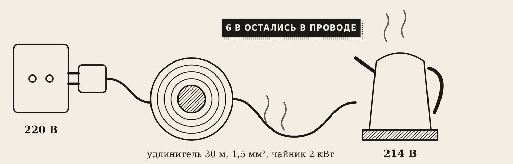
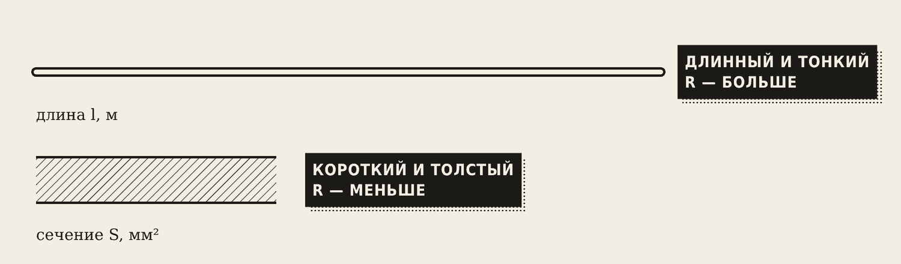
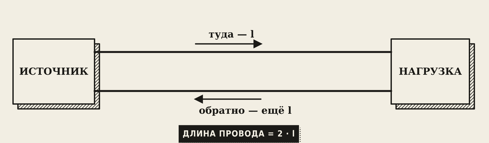
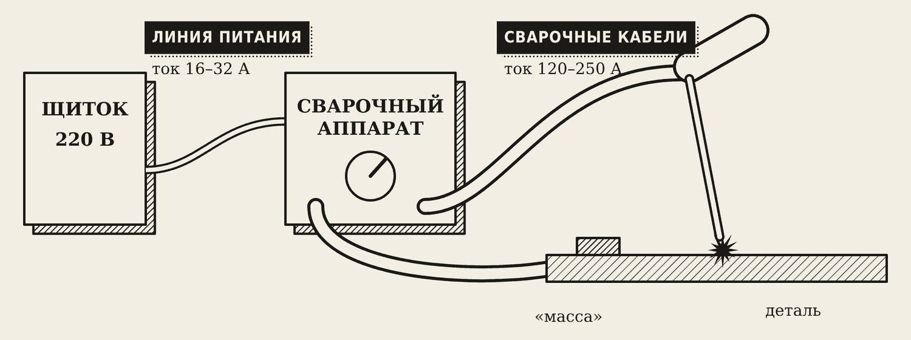
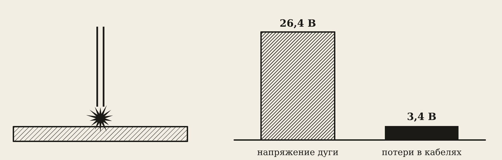
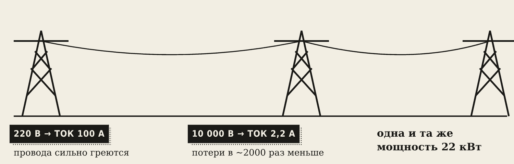

1. Что нужно сделать
Линия питания сварочного аппарата и сварочные кабели: сколько напряжения и мощности теряется в проводах и годятся ли кабели. Вариант — ваш номер в журнале, таблица вариантов — в конце бланка отчёта.
2. Провод — тоже резистор

Провод — тоже резистор. Чем он длиннее и тоньше, тем больше сопротивление, тем больше вольт «съедает» он по дороге и тем сильнее греется.

R = ρ · L / S
- ρ — удельное сопротивление: медь 0,0175, алюминий 0,028 Ом·мм²/м (готовое число из таблицы);
- L — длина провода в метрах;
- S — сечение в мм².

Запомните
Ток идёт туда и обратно. Если аппарат стоит в 25 м от щитка, длина провода L = 2 · 25 = 50 м. Забыли умножить на 2 — ответ вдвое меньше правильного.
Потери в проводе:
ΔU = I · R ΔP = I² · R

На сварочном посту две разные линии:
- Линия питания — от щитка до аппарата, ток 16–32 А при 220 В.
- Сварочные кабели — от аппарата к электрододержателю и к «массе», ток 120–250 А, но напряжение дуги всего 20–35 В.
Образец, часть А — линия питания. Медь, S = 4 мм², расстояние 25 м, I = 20 А, в щитке 220 В.
- R = 0,0175 · 2 · 25 / 4 = 0,0175 · 50 / 4 = 0,219 Ом.
- ΔU = 20 · 0,219 = 4,4 В.
- На аппарате: 220 − 4,4 = 215,6 В.
- ΔP = 20² · 0,219 = 400 · 0,219 = 88 Вт.
- КПД линии = 215,6 / 220 · 100 % = 98 % — линия в порядке.
Образец, часть Б — сварочные кабели. Медь, S = 25 мм², каждый кабель 15 м, сварочный ток I = 160 А.
- R = 0,0175 · 2 · 15 / 25 = 0,0175 · 30 / 25 = 0,021 Ом.
- ΔU = 160 · 0,021 = 3,4 В.
- ΔP = 160² · 0,021 = 25 600 · 0,021 = 538 Вт — кабели греются, как половина чайника.
- Напряжение дуги: Uд = 20 + 0,04 · I = 20 + 0,04 · 160 = 26,4 В.
- Доля потерь: 3,4 / 26,4 · 100 % = 13 % — больше 10 %.

Вывод: линия питания в порядке, а сварочные кабели теряют слишком много. Нужен кабель толще (35 мм²) или короче.
Запомните
В части Б процент потерь считают от напряжения дуги, а не от 220 В. Учебное правило: потери в кабелях — не больше 10 % от напряжения дуги.
3. Высокое напряжение в ЛЭП

Почему ЛЭП работают на высоком напряжении. Для мощности 22 кВт при 220 В нужен ток 100 А, а при 10 000 В — всего 2,2 А. Потери ΔP = I² · R зависят от квадрата тока, поэтому при высоком напряжении они меньше примерно в 2000 раз. Подробнее — в теме «Трансформаторы».
4. Проверьте себя в браузере
Откройте лабораторию «Цепи постоянного тока», вкладку «Кабель и потери», введите номер варианта и сравните R, ΔU, ΔP и долю потерь со своими. Там же можно подобрать сечение, при котором потери не больше 10 %.
5. Как оформить и защитить работу
В отчёте: «Дано», части А и Б со всеми шагами, таблица, вывод — годятся ли кабели.
Типичные ошибки:
- В ПР № 2 не умножили длину на 2 — сопротивление и ΔU вдвое меньше нужного.
- Процент потерь в кабелях посчитали от 220 В вместо напряжения дуги.
- Дробь в калькуляторе набирается через точку: 0,0175 → 0.0175.
Словарик
- Удельное сопротивление ρ — сопротивление провода длиной 1 м и сечением 1 мм².
- Сечение S — площадь среза жилы провода, в мм².
- Потеря напряжения ΔU — сколько вольт «съел» провод по дороге.
- КПД линии — какая доля напряжения дошла до потребителя.
- Напряжение дуги — при ручной сварке Uд = 20 + 0,04 · I.
Эталоны в тетрадь
Перепишите в тетрадь по билетам — каждый эталон на отдельную страницу, с рисунком и строкой «Мой пример».
Сопротивление проводника
Электрическое сопротивление проводника: от чего зависит. Почему сварочные кабели делают медными и большого сечения.
- Сопротивление R — насколько проводник мешает току, в омах [Ом].
- R = ρ·l / S: сопротивление больше у длинного и тонкого провода. Медь проводит лучше алюминия.
- При нагреве сопротивление металла растёт. Поэтому лампа накаливания чаще перегорает в момент включения: холодная нить пропускает большой ток.
- В сварке: кабель делают медным и толстым, чтобы он не грелся и не «съедал» напряжение.
Работа и мощность тока
Работа и мощность электрического тока. Закон Джоуля–Ленца. Единицы: Дж, Вт, кВт·ч.
- Мощность: P = U·I, в ваттах [Вт]. Чайник — 2000 Вт, светодиодная лампочка — 10 Вт.
- Работа (энергия): A = P·t, [Дж]. Счётчик считает в кВт·ч: чайник 2 кВт за полчаса = 1 кВт·ч.
- Закон Джоуля–Ленца: ток нагревает проводник: Q = I²·R·t.
- Примеры: чайник, утюг, обогреватель; в сварке — нагрев кабеля и контактная (точечная) сварка.
Проверь себя
Сначала ответьте сами — в тетради или вслух. Потом нажмите на вопрос, чтобы увидеть ответ.
1Аппарат стоит в 20 м от щитка. Какую длину провода подставлять в формулу?
40 м: ток идёт туда и обратно.
2Медный провод 50 м, сечение 2,5 мм². Найдите сопротивление.
R = 0,0175 · 50 / 2,5 = 0,35 Ом.
3Почему у сварочных кабелей потеря 3 В — это много, а у линии 220 В — мало?
Потерю сравнивают с напряжением дуги (20–35 В): 3 В — это около 10 %. Для 220 В те же 3 В — чуть больше 1 %.
4Что сделать, если сварочные кабели теряют больше 10 %?
Взять кабель большего сечения или укоротить его.
5Почему ЛЭП работают на высоком напряжении?
При той же мощности ток меньше, а потери на нагрев пропорциональны квадрату тока.
Попробуйте в лаборатории
Откройте на телефоне или компьютере — ничего устанавливать не нужно.
Ответы к «Проверь себя»
- 40 м: ток идёт туда и обратно.
- R = 0,0175 · 50 / 2,5 = 0,35 Ом.
- Потерю сравнивают с напряжением дуги (20–35 В): 3 В — это около 10 %. Для 220 В те же 3 В — чуть больше 1 %.
- Взять кабель большего сечения или укоротить его.
- При той же мощности ток меньше, а потери на нагрев пропорциональны квадрату тока.